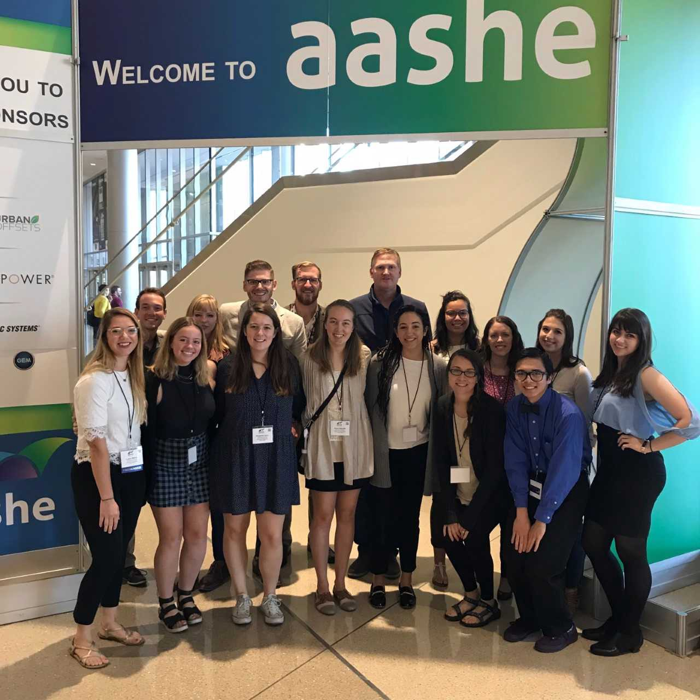

Résumé
Education
Gonzaga University, graduating May 2019
B.A. in Computer Science with concentrations in Environmental Studies and English; 3.74 GPA
- Experienced in C++, Python, Java, Android Studio, HTML, CSS, Javascript, Processing, Adobe Photoshop, and Adobe InDesign
Work Experience
Gonzaga University, Women's and Gender Studies Department |
|
| Digital Archive Intern, MacDonald Work Award recipient | September 2017 - present |
|
|
Gonzaga University, Digital Humanities Initiative |
|
| Software Research Assistant | September 2017 - present |
|
|
| Digital Design Architect | January 2017 - June 2017 |
|
|
Personal Website Design Consultant |
August 2017 - December 2017 |
| https://www.sostersmith.com/ | |
|
|
Steve & Kate's Camp, San Mateo, CA |
|
| Head Cook | Summer 2016 & 2017 |
|
|
Sodexo Dining Services, Gonzaga Campus |
|
| Prep Cook | September 2016 - March 2017 |
|
|
A page on the Weaving website
Before & after shots of sostersmith.com site
Cooking 90 grilled cheeses at summer camp
University Leadership
Student Sustainability Leader, Gonzaga University |
Spring 2018 |
|
|
Speaker, Association for Advancement of Sustainability in Higher Education (AASHE) |
October 2017 |
|
|
Co-Leader, "Mission: Possible" Spring Break Service Week |
September 2017 - March 2018 |
|
|
Officer, Real Food Challenge Gonzaga |
September 2016 - Present |
|
|
Co-Leader, Food Systems Working Group |
January 2017 - Present |
|
|
Vice President, Gonzaga Black Student Union |
April 2016 - April 2017 |
|
|

Whole group of Gonzaga students and staff at AASHE
Mission Possible team after carrying a chicken coop in the rain and mud
Black Student Union advertising for our annual dinner